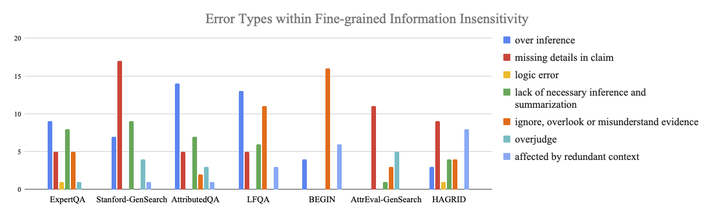

Error Analysis
Through a detailed error analysis, we observed the following takeaways:
- Over 66% error cases are caused by fine-grained information insensitivity: This means when making a wrong judgment, the model is most likely to fail in comparing fine-grained information within the claim and the evidence. Here, 'fine-grained information' encompasses a wide array of specifics, from discrete data points such as numerical figures, dates, names, and locations, to more complex elements like particular events or logical connections.
- About 26.8% errors are caused by the mismatch between information accessible to the model and that accessible to human annotators: This disparity brings into question the reliability of labels within current attribution evaluation datasets. Our analysis suggests that, in certain cases, determining the label based solely on the provided claim and evidence can be challenging due to insufficient information or ambiguous references (error type: need additional information/reference ambiguity).
- Within 'fine-grained information insensitivity', the model also makes different kinds of mistakes regarding its label error class, i.e., false positive or false negative. In the case of false positives, the model misses certain details within the claim 43% of the time, and in 41% of the instances, it made incorrect connections and inferences to indicate the claim being supported by the evidence, which is actually wrong. Conversely, within the false negative category, the model predominantly misinterprets or neglects details in the evidence around 46% of the time, and 39% of them are because of lacking necessary inference and summarization to reach the attribution judgment, which could be very easy for humans.

We also show the error case distribution in 7 test sets: